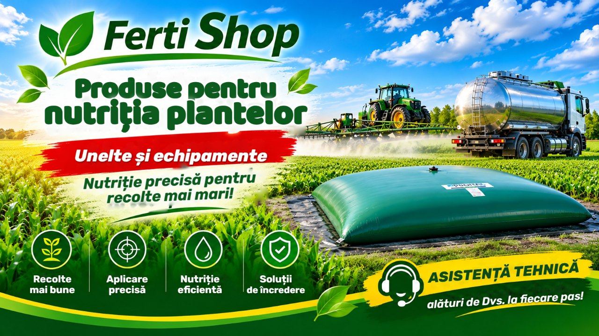

UAN 32
Azot lichid în trei forme: nitric acționează imediat, amoniacal rapid, amidic prelungit.
Când: înainte de semănat și la fertilizările fazale — cereale păioase, rapiță, porumb; cu duze cu picături mari.

Sezonul 2027
Mai puține pierderi, mai mult în recoltă.
Azot lichid în trei forme: nitric acționează imediat, amoniacal rapid, amidic prelungit.
Când: înainte de semănat și la fertilizările fazale — cereale păioase, rapiță, porumb; cu duze cu picături mari.
Fosfor și azot în formă complet solubilă — fosfor care rămâne mai mult timp accesibil plantei, mai ales în bandă și pe soluri carbonatice.
Când: la semănat, în bandă, la 5 cm lateral și 5 cm sub sămânță — pentru primele faze de creștere.
Potasiu și sulf într-o singură soluție limpede, fără cloruri — și pentru culturile sensibile la clor.
Când: la semănat, în amestec starter cu APP sau UAN (înainte de amestecare, probă în borcan) și foliar, când necesarul de potasiu este cel mai mare.
Lucrăm cu APP de la primul său import în Serbia — știm cum se aplică pe solurile noastre.
Introduceți suprafața și doza de azot — vedeți imediat litrii, tonele și rezervorul necesar.
Calcul pentru UAN 32: 1 litru ≈ 0,42 kg azot, densitate 1,32 kg/l. Doza depinde de cultură, producția planificată și starea solului — pentru parcela dumneavoastră pregătim o propunere.
Rezultate medii din literatură; efectul pe parcela dumneavoastră depinde de sol, vreme și modul de aplicare. KTS: fișa tehnică a producătorului.